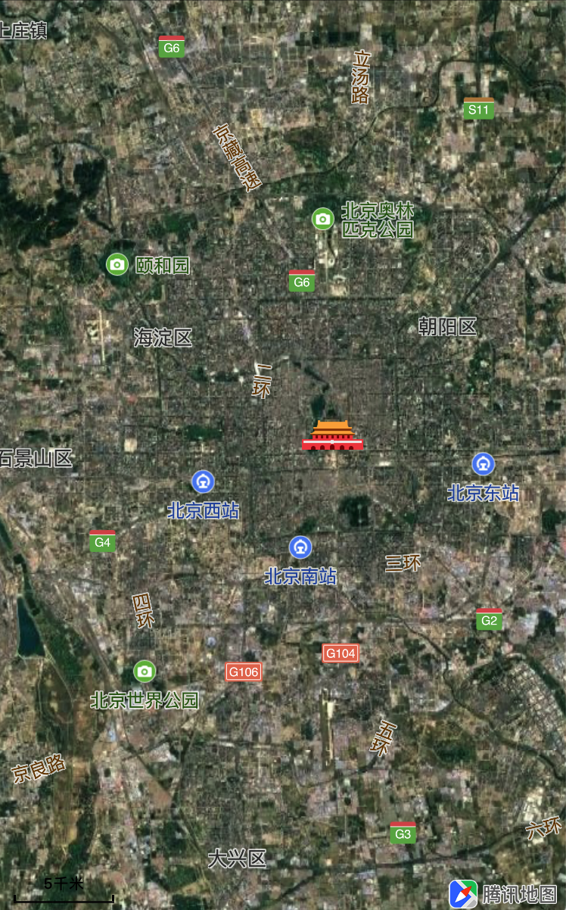

自定义瓦片图层
简介
什么是瓦片
瓦片是组成地图形貌的基本元素，腾讯地图SDK将世界地图在不同的缩放级别下，以高清256*256或者标准512*512为单元划分成地图瓦片数据。 除了内置的瓦片覆盖层（热力图、海外图、个性化图层等）之外，用户可以通过自定义QTileOverlay来实现添加自定义瓦片功能。
关于地图坐标系和缩放级别
腾讯地图坐标是使用GCJ-02坐标（投影坐标系），您可以使用腾讯坐标转换服务将其他坐标系坐标转换成GCJ-02坐标。目前可支持编辑的缩放级别为[3-18]，您也可以通过self.mapView.minZoomLevel和self.mapView.maxZoomLevel接口获取当前最大和最小缩放级别，来调整对应的配置。
什么是瓦片覆盖层
瓦片覆盖层，是为了展示地图个性化数据提供能力，您可以把某些区域内的地图瓦片，覆盖成独特风格的图片数据。地图SDK提供了非常简便的接口方法，来实现自定义瓦片能力。
如开发者没有基础地图绘制数据，腾讯地图提供了云端个性化地图能力，可以支持在线修改地图元素的样式 以期望满足个性化配置样式的需求。
如开发者有室内CAD相关的数据，希望在地图上进行展示，我们提供了商务级室内地图合作能力，能帮助开发者更快的完成需求。
如开发者有生产瓦片地图数据的能力，还不知道如何接入的话，接下来我们通过两部分讲解，完成这部分的指导：
- 添加瓦片覆盖层
- 移除瓦片覆盖层
添加瓦片覆盖层
创建瓦片图层数据模型类LocalTile继承自QTileOverlay，并重载方法
loadTileAtPath: result:加载本地瓦片图片，示例代码如下：- (void)loadTileAtPath:(QTileOverlayPath)path result:(void (^)(NSData *, NSError *))result { NSString *imagePath = [NSString stringWithFormat:@"%d-%d-%d.png", (int)path.z, (int)path.x, (int)path.y]; NSString *filePath = [[[NSBundle mainBundle] resourcePath] stringByAppendingPathComponent:@"localTiles"]; // 使用本地瓦片图片创建NSData NSData *data = [NSData dataWithContentsOfFile:[filePath stringByAppendingPathComponent:imagePath]]; if (data.length != 0) { // 将data数据传入回调block中 result(data,nil); } else { NSError *error = [NSError errorWithDomain:@"QTileLoadErrorDomain" code:-1 userInfo:@{NSLocalizedDescriptionKey: @"load tile data error"}]; result(nil, error); } }创建LocalTile类，并添加到mapView中，示例代码如下：
LocalTile *localTile = [[LocalTile alloc] init]; [self.mapView addOverlay:localTile];实现\
mapView: viewForOverlay:方法，并创建瓦片图层QTileOverlayView，示例如下：- (QOverlayView *)mapView:(QMapView *)mapView viewForOverlay:(id<QOverlay>)overlay { // 生成瓦片图的render if ([overlay isKindOfClass:[QTileOverlay class]]) { QTileOverlayView *render = [[QTileOverlayView alloc] initWithTileOverlay:overlay]; return render; } return nil; }效果如下图所示：

移除瓦片覆盖层
您可以直接调用
removeOverlay:方法进行移除，示例如下：
[self.mapView removeOverlay:_localTile];